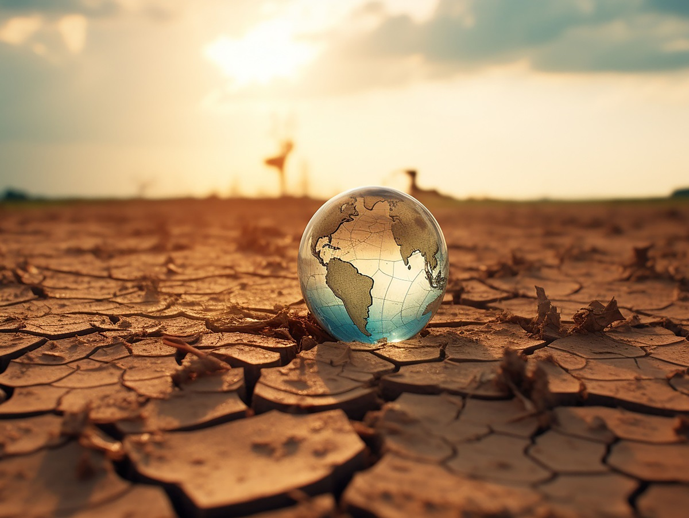

Solo hay un camino para evitar los efectos más devastadores del cambio climático: avanzar a marchas forzadas hacia una sociedad baja en carbono que deje atrás los
Aquí algunas de las principales medidas de prevención y mitigación del cambio climático:
1. Reducción de emisiones de gases de efecto invernadero:
- Transición hacia energías renovables como solar, eólica e hidroeléctrica.
- Mejora de la eficiencia energética en edificios, transporte y procesos industriales.
- Reducción del uso de combustibles fósiles.
- Fomento de la economía circular y el reciclaje.
2. Reforestación y conservación de bosques:
- Plantar más árboles y restaurar ecosistemas forestales.
- Proteger los bosques existentes de la deforestación y la degradación.
- Promover prácticas agrícolas y forestales sostenibles.
3. Mejora de la eficiencia en el uso de recursos:
- Reducir, reutilizar y reciclar los residuos.
- Optimizar el uso del agua, la energía y otros recursos.
- Desarrollar tecnologías y procesos más eficientes.
4. Adaptación a los impactos del cambio climático:
- Mejorar la resiliencia de infraestructuras y sistemas.
- Desarrollar planes de gestión de riesgos y desastres.
- Proteger a las poblaciones más vulnerables.
5. Educación y concientización pública:
- Promover la educación y la sensibilización sobre el cambio climático.
- Involucrar a la sociedad civil, empresas y gobiernos en acciones climáticas.
- Fomentar cambios de comportamiento y estilos de vida más sostenibles.
6. Cooperación internacional y políticas climáticas:
- Fortalecer los acuerdos y compromisos globales sobre el clima.
- Movilizar financiamiento e inversiones para la acción climática.
- Implementar políticas y regulaciones efectivas a nivel nacional y local.
La implementación de estas medidas de prevención y mitigación de manera integral y coordinada a nivel global es fundamental para hacer frente al desafío del cambio climático.
